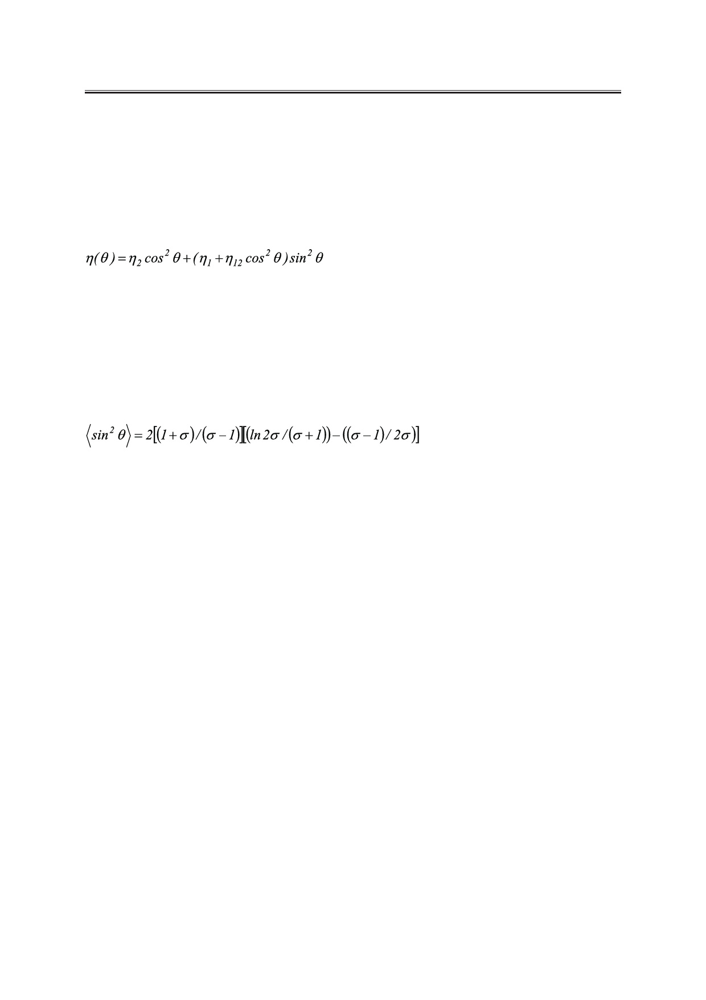

С.В. Пасечник, Д.В. Шмелева, А.В. Торчинская, О.А. Семина, А.А. Дюкин
для 60º и 51º при d = 0.6 и 0.4 мкм соответственно. Зависимость θr от r должна приводить
к соответствующему уменьшению эффективной сдвиговой вязкости при уменьшении r.
Такой эффект может быть ответственным за некоторые различия между зависимостями
ηeff(T), полученными для образцов с различными значениями диаметра пор. Действитель-
но, в случае ER конфигурации локальное значение сдвиговой вязкости зависит только от
полярного угла θ в соответствии с хорошо известным выражением [19]:
,
(15)
где обычно значение параметра η12 существенно меньше, чем значения η1 и η2.
В свою очередь, угол θ монотонно убывает от значения θ = θr на внутренней поверх-
ности поры до значения θ = 0 в центре поры.
Таким образом, можно ожидать, что значение эффективной вязкости ηeff окажется
в интервале между η(θr) ≈ η1sin2θr и η(0) = η2. В рамках одноконстантного приближения
можно получить следующее выражение для среднего значения sin2θ:
.
(16)
Расчет, выполненный в соответствии с (16) при использовании значений параметров,
представленных выше, приводит к значениям <sin2θ>, равным 0.22 и 0.17 для d = 0.6 и 0.4 мкм,
соответственно. Подставляя эти значения в уравнение (15) и используя данные независи-
мых измерений вязкости в ЖК-440 η1= 0.12 Па·с, η2= 0.02 Па·с [11], можно рассчитать
значения средней вязкости при комнатной температуре <η> = 0.44 Па·с, и 0.39 Па·с для
d=0.6 и 0.4 мкм, соответственно. Эти значения близки к значениям эффективной сдви-
говой вязкости, представленным выше. Тем не менее, принимая во внимание типичные
ошибки эксперимента в определении ηeff (около 5 ... 10%) трудно подтвердить довольно
слабую теоретическую зависимость <η> от d. Кроме того, ранее [18] было обнаружено
увеличение сдвиговой вязкости с уменьшением d для заполненных жидкими кристалла-
ми пористых пленок ПЭТ, что связывалось с прямым воздействием эффектов сильного
пространственного ограничения на диссипативные параметры жидких кристаллов. От-
метим, что данные эксперименты проведены для пленок без предварительной обработки
поверхности при более интенсивных сдвиговых потоках. Таким образом, для детальной
экспериментальной проверки теоретических предположений необходимо проведение
дальнейших исследований.
Заключение
Получены первые результаты реологических свойств изотропной жидкости (эта-
нол) и двух НЖК (ЖК440 и 5СВ) при затухающем потоке Пуазейля через пористые ПЭТ
пленки. Установлено, что вытекающий из теории ньютоновских жидкостей простой экс-
поненциальный закон, описывающий динамику затухающего потока, выполняется в обо-
их упомянутых выше случаях. В случае НЖК он соответствует постоянному значению
эффективной сдвиговой вязкости. Выявлены температурные зависимости эффективной
Российский технологический журнал 2017 Том 5 № 5
35